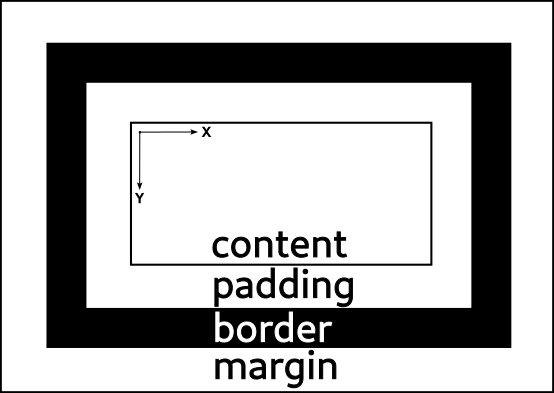

Coordinate systems in GTK [src]
All coordinate systems in GTK have the origin at the top left, with the X axis pointing right, and the Y axis pointing down. This matches the convention used in X11, Wayland and cairo, but differs from OpenGL and PostScript, where the origin is in the lower left, and the Y axis is pointing up.
Every widget in a window has its own coordinate system that it uses to place its child widgets and to interpret events. Most of the time, this fact can be safely ignored. The section will explain the details for the few cases when it is important.
The box model
When it comes to rendering, GTK follows the CSS box model as far as practical.

The CSS stylesheet that is in use determines the sizes (and appearance) of the
margin, border and padding areas for each widget. The size of the content area
is determined by GTKs layout algorithm using each widget’s Gtk.WidgetClass.measure
and Gtk.WidgetClass.size_allocate vfuncs.
You can learn more about the CSS box model by reading the CSS specification or the Mozilla documentation.
To learn more about where GTK CSS differs from CSS on the web, see the CSS overview.
Widgets
The content area in the CSS box model is the region that the widget considers its own.
The origin of the widget’s coordinate system is the top left corner of the content area,
and its size is the widget’s size. The size can be queried with gtk_widget_get_width()
and gtk_widget_get_height(). GTK allows general 3D transformations to position
widgets (although most of the time, the transformation will be a simple 2D translation).
The transform to go from one widget’s coordinate system to another one can be obtained
with gtk_widget_compute_transform().
In addition to a size, widgets can optionally have a baseline to position text on.
Containers such as GtkBox may position their children to match up their baselines.
gtk_widget_get_baseline() returns the y position of the baseline in widget coordinates.
When widget APIs expect positions or areas, they need to be expressed in this coordinate
system, typically called widget coordinates. GTK provides a number of APIs to translate
between different widgets’ coordinate systems, such as gtk_widget_compute_point()
or gtk_widget_compute_bounds(). These methods can fail (either because the widgets
don’t share a common ancestor, or because of a singular transformation), and callers need
to handle this eventuality.
Another area that is occasionally relevant are the widget’s bounds, which is the area
that a widget’s rendering is typically confined to (technically, widgets can draw outside
of this area, unless clipping is enforced via the GtkWidget:overflow property).
In CSS terms, the bounds of a widget correspond to the border area.
During GTK’s layout algorithm, a parent widget needs to measure each visible child and allocate them at least as much size as measured. These functions take care of respecting the CSS box model and widget properties such as align and margin. This happens in the parent’s coordinate system.
Note that the text direction of a widget does not influence its coordinate system, but simply determines whether text flows in the direction of increasing or decreasing X coordinates.
Events
Event controllers and gestures report positions in the coordinate system of the widget they are attached to.
If you are dealing with raw events in the form of GdkEvent that have positions
associated with them (e.g. the pointer position), such positions are expressed in
surface coordinates, which have their origin at the top left corner of the
GdkSurface.
To translate from surface to widget coordinates, you have to apply the offset from the
top left corner of the surface to the top left corner of the topmost widget, which can
be obtained with gtk_native_get_surface_transform().